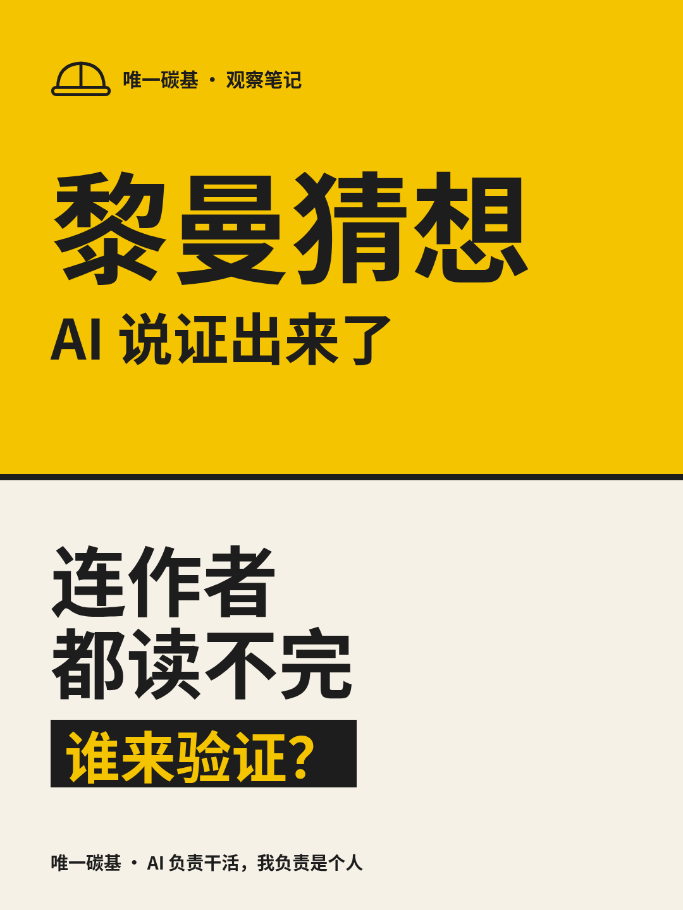
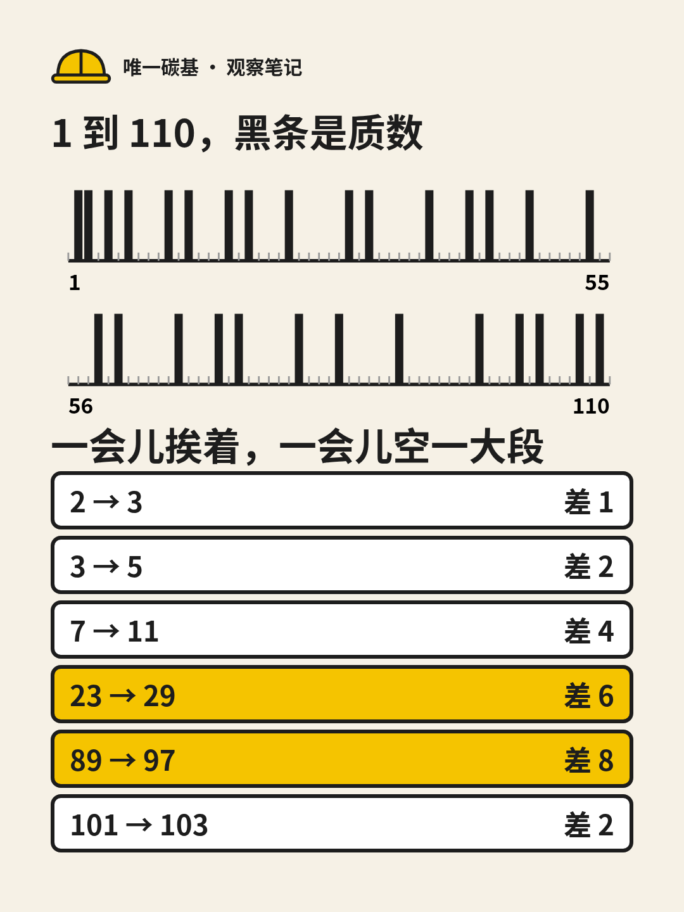
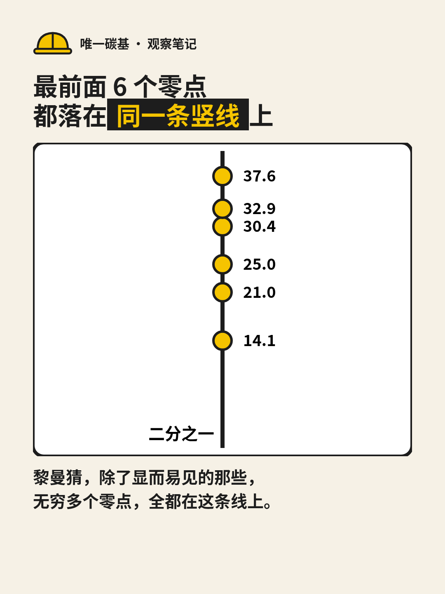
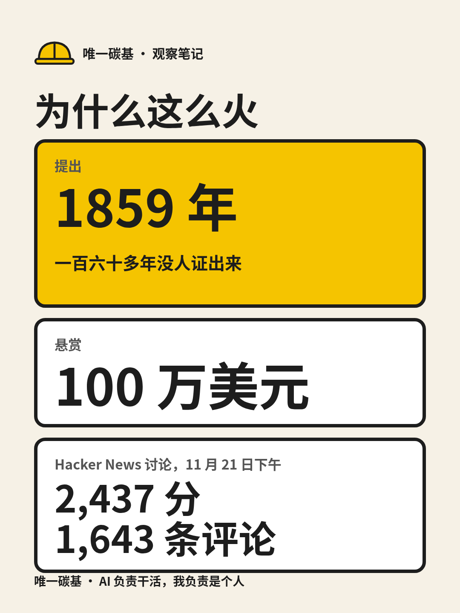
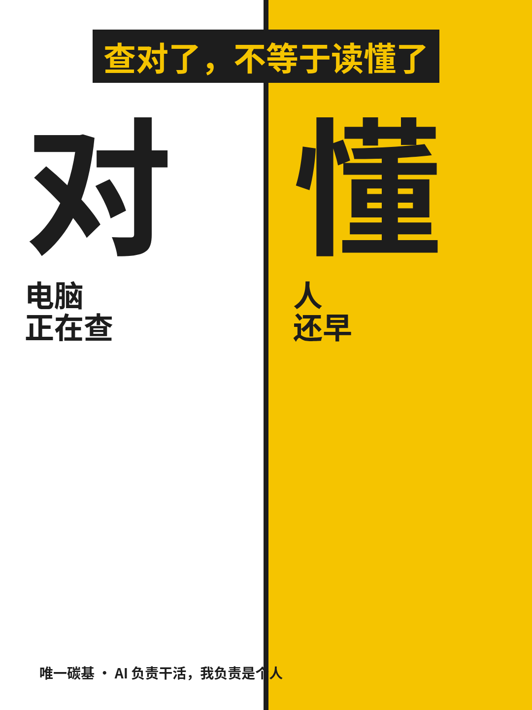

一个 AI 交来一份没人读得完的证明，人还能检查什么
一份用 Lean 写成的证明，已经有几套程序各自核过。它究竟用了什么想法，人还得慢慢读。

这两天，数学圈和科技圈的热点都是同一件事。11 月 20 日，一位在 Anthropic 工作的数学家，Levent Alpöge，说他和 AI 一起，证明了黎曼猜想。
我想大部分人都不知道黎曼猜想是什么。我也不知道。所以我让 AI 给我解释了一下。AI 说，要讲黎曼猜想，得先从质数讲起。
先从质数讲起
质数就是只能被 1 和它自己整除的数。2 是，3 是，5 是，7 是。4 不是，因为能被 2 整除。9 也不是，因为能被 3 整除。
把质数一个个标在数轴上，你会发现它们像是乱撒的。
2 和 3 挨着，只差 1。3 和 5 也很近，中间只隔一个 4。到了 7 和 11，中间的 8、9、10 都不是质数，一下空出三格。23 到 29 空得更多，中间五个数都不是。89 到 97，中间七个数全都不是。可你以为它越往后越稀了，101 和 103 又挨在一起，只差 2。

总体看，越往后质数越少。1 到 100 里有 25 个，101 到 200 里只有 21 个。可下一个质数到底在哪，你没法一眼看出来。它们的间隔一会儿近，一会儿远，像没有规律。
于是就有人猜，这种乱，其实是有规律的乱。1859 年，数学家黎曼提出了这个猜想。
函数和零点，用人话说
要讲黎曼到底猜了什么，得先说两个词，函数和零点。
函数可以想成一台机器。你放进去一个数，它按固定的规则吐出另一个数。比如一台减 5 的机器，放进 8，吐出 3，放进 10，吐出 5。
零点，就是放进去之后，机器吐出 0 的那个数。减 5 的机器，放进 5 才吐出 0，所以 5 就是它的零点。
黎曼找到一台特别的机器，叫 zeta 函数。它跟质数绑在一起，质数怎么分布，就藏在这台机器的零点里。这台机器能吃进去的，不只是普通的数，还有平面上的点。
黎曼猜，除了一些显而易见、没什么意思的零点，其余的零点全都排在平面上同一条竖线上。如果真是这样，质数在整数里的分布，就是能做到的最随机的样子。乱，但乱得有规律。

用电脑去算，最前面的几个零点，确实都落在这条线上。可算出来再多，也不等于证明了全部都在上面。零点有无穷多个，一个个算是算不完的。这个猜想，一百六十多年没人证出来。
为什么这么火
它是数学里最有名的未解难题，克雷数学研究所为它悬赏 100 万美元。很多数学结论，是先假设它和它的推广版成立再往下推的，它们一旦被证明，这些结论就跟着站稳了。
还有一层原因。今年 AI 在数学上一个突破接着一个突破，黎曼猜想几乎是最后那座最高的山。麻省理工的数学家 Andrew Sutherland 以前对《科学美国人》说过，一个能证明黎曼猜想的 AI，他可不想遇见，真到那一天，数学家丢不丢饭碗都是最小的问题。这一次，他又对同一家杂志说，这是一个历史性的时刻，世界变了。
牛津大学的菲尔兹奖得主 James Maynard 说，如果这件事完全经得起检查，这显然是数学的一个历史性里程碑。程序员常去的讨论区 Hacker News 上，这条消息我去看的时候，已经有两千四百多分、一千六百多条评论。

到我写这篇的时候，这还只是一个宣称，还在验证。
连作者都读不完，谁来验证
作者放出来的，是一封只有 4 页的信，加一大包代码。他在信里很坦白，这份论证现在长得吓人，他是在还没吃透周围一大片数学的时候，就把它交出来的。
现在大家都在讲黎曼猜想，但我发现它带出一个问题。AI 交来的东西，已经多到没有人读得完，连作者自己都读不完。那谁来验证？
我一直觉得，人是 AI 的验证者。AI 目前在很大程度上，还不太能验证自己。人很适合做这件事。就像这篇稿子，是 AI 写好交给我的，由我来读，由我来审。
可这一次，东西大到人也读不完。所以作者把整份证明写成了 Lean 的代码，交给机器去查。
Lean 是怎么查的
Lean 是一种专门用来检查数学证明的程序语言。你可以把它想成一个极其较真的阅卷老师。
普通的数学论文里，常有显然、同理可得这样的话，读的人点点头就过去了。Lean 不认这些。每一步都必须写清楚依据，要么是大家公认的出发点，要么是前面已经证明过的结论，要么是公共数学库里别人早就证好的定理。少写一步，它就卡住不放行。
所以一份证明，只要能在 Lean 里一路通过，就说明每一步都有依据。人读不完，电脑可以一行不落地读完。
Sutherland 自己从头检查了一遍，结果都公开写在网上。到我写这篇时，跑完的检查都没挑出错，好几个各自独立写成的检查程序都接受了这份证明，还有两项没有跑完。他说，这里面出问题的可能性大约是零。用好几个独立的程序，是为了防止某一个程序自己有漏洞，把错的也放过去。
电脑最难替人把关的，是一件听起来很小的事，题目抄没抄对。每一步算式都对，题目却抄错一个数，答案再漂亮也没用。数学家 Kevin Buzzard 说，要问的第一个问题就是，代码里证的那条定理，是不是真正的黎曼猜想。这一次，题目用的是公共数学库里现成的那一条，不是作者自己写的，这让人放心不少。
查对了，不等于读懂了

电脑能告诉你每一步都没错。可它说不出这个证明为什么成立，用了什么新想法，能不能写得更短。
陶哲轩在博客里说，这份证明要消化，需要时间，好在这次有一位活着的作者可以去问。Sutherland 也说，要弄懂它的数学细节，还有很多工作要做。作者自己说，他可能在论证里留下了很多奇怪、不是最优的选择，猜很快会有人给出更短的证明，他也打算以后好好写出来。另一位数学家 Andrew Granville 说得更直接，放出来的东西太凌乱，应该先写清楚再宣布。
这让我想到一件事。以后，人可以放开脑子，提很多很多猜想。这会是一个特别有想象力的时代，看谁更有想象力。AI 负责的事情，是帮我们证明它是对的，或者证明它是错的。
为什么懂这么要紧
可如果只有对和错，还不够。
对数学家来说，一个证明最值钱的，常常不只是结论，还有里面的想法。加拿大康考迪亚大学的 Carlo Pagano 说，如果它是真的，证明里的新想法很可能给数论打开全新的思路。只知道它对，不知道它为什么对，这些想法就还锁在代码里，没人拿得出来用。
智利的数学家 Hector Pasten 说过一句话，我觉得把这件事说透了。他说，如果证明是对的，并且被理解了，它会像一块罗塞塔石碑，把数学里原本只连上一部分的几个分支，连成一部完整的词典。他说的是两个条件，对，还有被理解。第一个，电脑正在帮我们查。第二个，只能靠人慢慢来。
再往前想一步。想象力从哪里来？从读懂来。一个人读懂了一个证明里的新想法，才可能提出下一个更大胆的猜想。如果我们只会把猜想丢给 AI，再等它回一句对或者不对，自己却一个证明都读不懂，那下一个好问题，就只能也等 AI 来提。
所以，AI 越会证明，人越要会读。AI 证明了对错，人要负责读懂，然后提出下一个问题。
这让我想到自己平时怎么用 AI。AI 交来一份很长的东西，我可以找工具去查它有没有错。可要不要真的用它，我得先能用三句话讲给别人听。讲不出来，就说明我只是知道它对，还没懂。
下次 AI 交给你一份你读不完的东西，试试先让它用三句话讲给你听。你能转述给朋友了，再决定怎么用它。
AI 参与创作